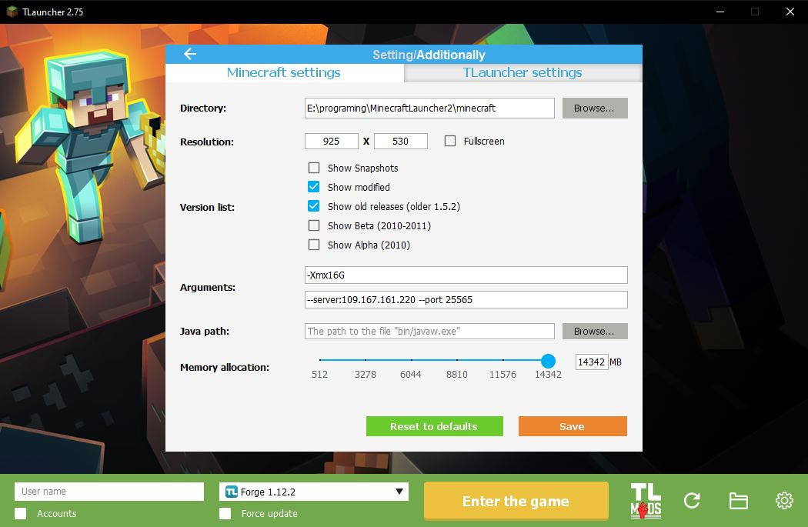

DOWNLOAD
Download launcher for MfCraft server. Start play Minecraft with beautiful shaders and many mods.
{# #} {#DOCUMENTATION
Installer for Windows
Downloading
At first you should download the launcher from this website.
Installation
1. Start the installer and choose language.
2. Click Next.
3. Choose place for the launcher.
4. Enter name for shortcuts in Start Menu.
5. Create icon on desktop if you want.
6. Start installation.
7. Wait the end of installation.

8. Finish installation.
Installation for Windows with Git
{#First method
#} {##} {#1. Go to the launcher page on GitHub.
#} {##} {#2. Donload ZIP archive.
#} {##} {#3. Unzip it in place for your choise.
#} {##} {#4. Create desktop shortcut if you want (from MfCraft\MfCraft.exe).
#} {##} {#Second method
#}1. Install GIT.
2. Open terminal.
3. Type 'cd location_for_launcher'.
4. Make directory('mkdir dir_name').
5. Make directory('mkdir dir_name').
6. 'cd dir_name'.
7. Create desktop shortcut if you want (MfCraft.exe).
How to use
2. Start MfCraft
3. Wait for button PLAY and then press it.

4. After that TLaucnher will start.
5. Select Forge 1.12.2 version.
6. Go to the settings > setting and paste path to your minecraft in MfCraft's directory.
7. Type your nickname or login in your TLauncher account.
8. Enter the game.
Errors
Connection error (check your internet connection and then restart launcher).